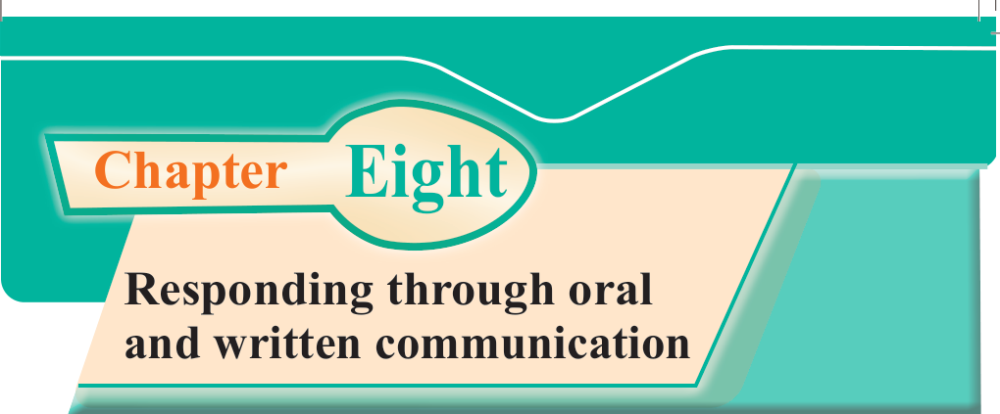
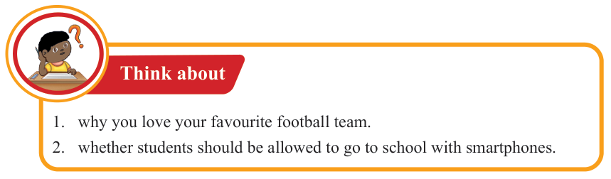
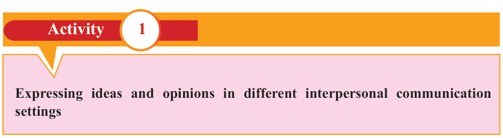

English for Secondary Schools Student’s Book Form One, printed page 123

Chapter Eight
Responding through oral and written communication
Introduction
Responding through oral and written communication makes the language user competent and confident. In this chapter, you will learn to respond appropriately through speaking and writing. You will also learn to use appropriate grammar and vocabulary in different contexts, specifically in greetings, bidding farewell and apologising. Thereafter, you will learn to use appropriate language and expressions in communicating with people of different age groups and statuses, particularly peers, elders, family members and leaders. The competencies developed will enable you to respond appropriately to oral and written communications in different interpersonal communication contexts.

Think about
1. why you love your favourite football team.
2. whether students should be allowed to go to school with smartphones.

Activity 1
Expressing ideas and opinions in different interpersonal communication settings